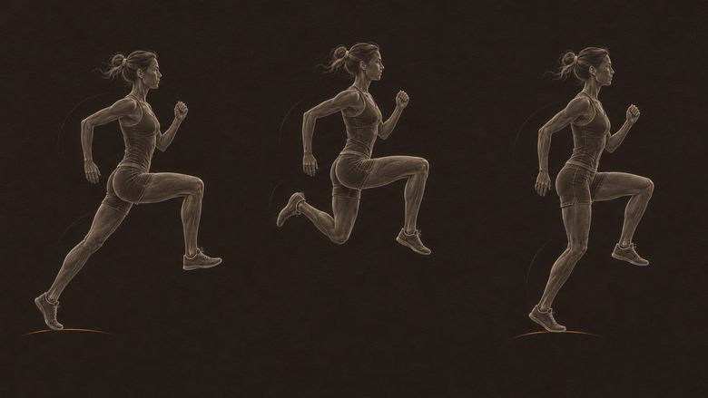

Geschichten / Körper & Bewegung
Warum der
Mensch sprintet.
Ein kurzer Bodenkontakt, ein kräftiger Abdruck: Beim Sprinten arbeitet dein ganzer Körper zusammen.

Kurzfassung
Schnellere Menschen erzeugen bei Höchsttempo mehr Stützkraft pro Kilogramm Körpergewicht. [Weyand u. a., 2000]
Beim Sprinten arbeiten Beine, Rumpf und Arme zusammen. [Dorn, Schache & Pandy, 2012]
Studien mit Lauf- und Radsprints zeigen, dass Sprinttraining Kraft und Ausdauer verbessern kann. [Markovic u. a., 2007] [Gillen u. a., 2016]
Deine Sprintzeiten werden vergleichbar, wenn Start, Messmethode und Bedingungen übereinstimmen. [Haugen & Buchheit, 2016]
Im Alltag brauchst du deine Höchstgeschwindigkeit selten. Vielleicht war dein letzter Sprint der zum Bus. Vielleicht bist du auf dem Sportplatz einem Ball hinterhergelaufen. Oder du erinnerst dich an keinen Anlass mehr. Auf der Bahn wartet diese Bewegung noch auf dich: eine freie Strecke, eine Linie, dein eigener Antritt.
Ein Sprint macht die Arbeit deines Körpers spürbar. Du drückst dich ab, hebst das Knie und setzt den nächsten Fuß auf. Jeder Kontakt mit dem Boden verändert deinen Lauf. Was dich dabei schnell macht, lässt sich messen – und trainieren.
Was dich beim Sprinten schnell macht
Schnellere Menschen drücken bei Höchsttempo kräftiger auf den Boden – gemessen am Körpergewicht. Weyand und Kollegen verglichen Menschen auf einem Laufband bei ihrer jeweiligen Höchstgeschwindigkeit. Die Schnelleren erzeugten größere Stützkräfte im Verhältnis zum Körpergewicht. Die Zeit, um das Bein in der Luft für den nächsten Schritt zurückzuführen, unterschied sich dagegen nicht. [Weyand u. a., 2000]

Kraft braucht Boden
Du beschleunigst, wenn beim Bodenkontakt der Vortrieb die Bremswirkung überwiegt. Drückst du mit dem Fuß gegen den Untergrund, wirkt eine Kraft zurück: die Bodenreaktionskraft. Wie stark und wie lange sie wirkt, bestimmt den Impuls, also die Kraftwirkung über die Kontaktzeit. Zum Beschleunigen muss ihr nach vorn gerichteter Anteil überwiegen; die Stützkraft trägt dich zugleich gegen die Schwerkraft. [Haugen, McGhie & Ettema, 2019]
Kurzer Kontakt, wirksamer Schritt
Eine kurze Bodenkontaktzeit macht dich nur schnell, wenn du dabei genug Kraft überträgst. Bei hohem Tempo bleibt deinem Fuß wenig Zeit auf dem Boden. Nur möglichst rasch wieder abzuheben, löst diese Aufgabe nicht. [Weyand u. a., 2000]
Dein Tempo ergibt sich aus Schrittlänge mal Schrittfrequenz, also der Zahl deiner Schritte pro Sekunde. Beide Größen hängen zusammen. Den Fuß weit nach vorn zu setzen, verlängert noch keinen wirksamen Schritt. Haugen, McGhie und Ettema zeigen, warum sich aus einfachen Modellen keine universelle Technikregel ableiten lässt. [Haugen, McGhie & Ettema, 2019]

Gepard und Mensch
Der Gepard ist das schnellste Landtier; seine Jagd verlangt auch Bremsen und Wendigkeit. Wilson und Kollegen maßen bei frei lebenden Geparden in Botswana bis zu 93 km/h. Die meisten Jagdläufe waren langsamer. Beschleunigen und Richtungswechsel gehörten ebenso dazu wie Spitzentempo. [Wilson u. a., 2013]
Die Stärke des Menschen liegt im langen Laufen. Bramble und Lieberman beschreiben uns im Vergleich mit vielen Vierbeinern als schwache Sprinter, aber bemerkenswerte Ausdauerläufer. Sie führen das auf anatomische und physiologische Eigenschaften zurück, die anhaltendes Laufen ermöglichen. [Bramble & Lieberman, 2004]
Was im Körper passiert
Beim Sprinten arbeiten Gesäß, vordere und hintere Oberschenkel, Waden und Hüftbeuger mit Rumpf und Armen zusammen. Dorn, Schache und Pandy untersuchten die Zusammenarbeit der Beinmuskeln mit Bewegungsdaten und einem Muskelmodell. Die Waden tragen zur Stützkraft bei; bei hohem Tempo bewegen Hüftbeuger, Gesäß und hintere Oberschenkel die Beine kräftig durch die Luft. [Dorn, Schache & Pandy, 2012]
Die hinteren Oberschenkel bremsen das Bein vor dem Aufsetzen und arbeiten beim frühen Bodenkontakt weiter. Schon während der Fuß noch in der Luft ist, bereiten sie den nächsten Schritt vor. Liu und Kollegen beschreiben die hohen Anforderungen an diese Muskeln beim Übergang zwischen Schwung und Bodenkontakt. [Liu u. a., 2017]
Schnelle Fasern brauchen schnelle Energie
Schnelle Muskelfasern arbeiten beim Sprinten mit. Diese Typ-II-Fasern können sich rasch zusammenziehen. Greenhaff und Kollegen untersuchten Muskelproben von sechs Personen vor und nach einem 30-Sekunden-Laufbandsprint. In den Typ-II-Fasern wurden mehr Glykogen, also gespeicherte Kohlenhydrate, und mehr Phosphokreatin, ein schneller Energievorrat, abgebaut als in den langsameren Typ-I-Fasern. [Greenhaff u. a., 1994]
Deine Muskeln brauchen beim Sprinten in kurzer Zeit viel ATP, den unmittelbar nutzbaren Energieträger der Zellen. Dafür greifen sie auf gespeicherte energiereiche Phosphate zurück und bauen Kohlenhydrate ab. Auch die aerobe Energiebereitstellung, also die Energiegewinnung mit Sauerstoff, arbeitet von Beginn an mit. Die Systeme laufen gleichzeitig; Dauer und Intensität bestimmen ihre Anteile. [Gastin, 2001]
Wachstumshormon bleibt länger erhöht
Ein Sprint regt die Ausschüttung von Wachstumshormon an. Bei Stokes und Kollegen blieb es nach einem einzigen maximalen 30-Sekunden-Radsprint 90–120 Minuten erhöht, also bis zu zwei Stunden. Untersucht wurden neun Männer. [Stokes u. a., 2002]
Warum Sprinten im Erwachsenenalter seltener wird
Im Erwachsenenalltag fehlen oft die Anlässe zum Sprinten. Als Kind liefern Fangspiele, Bälle und Wettläufe ständig einen Anlass zum Sprinten. Später liegt zwischen Schreibtisch, Einkauf und Heimweg oft kein einziger schneller Lauf.
Auch regelmäßiges Training hält die altersbedingten Leistungseinbußen nicht vollständig auf. Hendrickse und Kollegen begleiteten Masters-Sprinter über zehn Jahre. Die untersuchten Muskelmerkmale blieben erhalten, während Sprintleistung und Sprungleistung zurückgingen. Die Forschenden führten den Rückgang auf eine geringere Fähigkeit zur Krafterzeugung zurück. Deine Schulbestzeit beschreibt deshalb einen anderen Körper zu einer anderen Zeit. Der heutige Lauf liefert dir einen neuen Ausgangspunkt. [Hendrickse u. a., 2025]
Was Sprinttraining für Kraft, Ausdauer und Knochen bringt
Sprinttraining kann Kraft und Ausdauer messbar verbessern. Bei älteren Sprintern wurde außerdem eine höhere Knochendichte gemessen. [Markovic u. a., 2007] [Gillen u. a., 2016] [Piasecki u. a., 2018]
+10 % Kraft nach zehn Wochen
Zehn Wochen Lauf-Sprinttraining brachten +10 % mehr Kraft im Kniebeugentest. Bei Markovic und Kollegen trainierten 30 junge, sportlich aktive Männer dreimal wöchentlich mit maximalen Läufen über 10–50 Meter. Gemessen wurde die maximale isometrische Kniebeugenkraft: Die Teilnehmer drückten in der Kniebeugenposition gegen einen unbeweglichen Widerstand. [Markovic u. a., 2007]
+19 % Ausdauer bei ⅕ der Zeit
Kurze Radsprints brachten nach zwölf Wochen +19 % mehr maximale Sauerstoffaufnahme. Gillen und Kollegen untersuchten zuvor inaktive Männer. Die Sprintgruppe absolvierte dreimal wöchentlich 3 × 20 Sekunden maximale Radsprints mit je zwei Minuten lockerem Radfahren dazwischen. Mit Aufwärmen und Ausrollen dauerte eine Einheit zehn Minuten. [Gillen u. a., 2016]
Die Sprintgruppe brauchte ⅕ der Zeit bei ähnlichem Ausdauergewinn: zehn statt fünfzig Minuten pro Einheit. Die Vergleichsgruppe fuhr 45 Minuten moderat Rad, dazu kamen Aufwärmen und Ausrollen. In beiden Gruppen stieg die maximale Sauerstoffaufnahme um 19 %. Auch die Insulinempfindlichkeit verbesserte sich in beiden Gruppen ähnlich. [Gillen u. a., 2016]
+14 % Hüftknochendichte bei Masters-Sprintern
Masters-Sprinter hatten im bereinigten Gruppenvergleich eine um 14 % höhere Hüftknochendichte als Gleichaltrige ohne Sport. Piasecki und Kollegen verglichen 38 Masters-Sprinter mit durchschnittlich 71 Jahren mit 59 nicht sportlich aktiven Kontrollpersonen. Die Auswertung berücksichtigte Geschlecht, Alter, Größe, Körperzusammensetzung und Sprungleistung. Die Zahl beschreibt einen Unterschied zwischen Gruppen, keinen Zuwachs nach einem Trainingsprogramm. [Piasecki u. a., 2018]
Wie du wieder anfängst
Kraft, Technik und Sprintausdauer lassen sich auch als Erwachsener trainieren. Die Trainingsübersicht von Haugen und Kollegen beschreibt Sprintläufe, Technikarbeit und Krafttraining als Wege dorthin. Ein paar bewusste Läufe geben dir wieder ein Gefühl für Antritt, Rhythmus und Tempo. [Haugen u. a., 2019]
Suche dir eine freie, ebene Strecke mit Platz zum Auslaufen. Wärme dich auf, beginne mit kontrollierten Läufen und plane Erholung zwischen den Einheiten ein. Steigere die Belastung schrittweise und kläre gesundheitliche Beschwerden vor dem Training ärztlich ab. [WHO-Leitlinie] [Haugen u. a., 2019]
Wie du deine Sprintzeiten vergleichst
Eine Sprintzeit wird erst durch die Messbedingungen verständlich. Startverfahren, Messmethode, Wind und andere äußere Bedingungen verändern das Ergebnis. Haugen und Buchheit zeigen, dass Unterschiede im Messaufbau größer sein können als Trainingsfortschritte über Jahre. [Haugen & Buchheit, 2016]
Handgestoppte Zeiten lassen sich nicht mit einem festen Korrekturwert in elektronische Zeiten umrechnen. Hetzler und Kollegen fanden Abweichungen in beide Richtungen. Die Streuung verhinderte einen verlässlichen allgemeinen Korrekturfaktor. [Hetzler u. a., 2008]
Vergleiche mehrere Läufe unter möglichst gleichen Bedingungen. Nutze denselben Start und dieselbe Messmethode, und notiere Wind oder andere Änderungen. So erkennst du eher, ob sich dein Lauf verbessert hat. Deine Zeit wird zum Bezugspunkt für den nächsten Versuch. [Haugen & Buchheit, 2016]
Häufige Fragen
Was macht einen Menschen beim Sprinten schnell?
Schnellere Menschen drücken bei Höchsttempo kräftiger auf den Boden – gemessen am Körpergewicht. In der Studie von Weyand und Kollegen (2000) erzeugten sie größere Stützkräfte im Verhältnis zum Körpergewicht; die Beine wurden in der Luft nicht schneller zurückgeführt.
Welche Muskeln arbeiten beim Sprinten?
Gesäß, vordere und hintere Oberschenkel, Waden und Hüftbeuger arbeiten mit Rumpf und Armen zusammen. Die Beinmuskeln stützen den Körper und bewegen die Beine für den nächsten Schritt, wie Dorn, Schache und Pandy (2012) zeigen.
Was passiert beim Sprinten mit den Hormonen?
Ein Sprint regt die Ausschüttung von Wachstumshormon an. Bei Stokes und Kollegen blieb es nach einem einzigen maximalen 30-Sekunden-Radsprint 90–120 Minuten erhöht, also bis zu zwei Stunden. Untersucht wurden neun Männer.
Kann ich Sprinten als Erwachsener wieder trainieren?
Ja, du kannst Kraft, Technik und Sprintausdauer gezielt entwickeln. Die Trainingsübersicht von Haugen und Kollegen (2019) nennt dafür Sprintläufe, Technikübungen und Krafttraining.
Ersetzt Sprinten jedes andere Training?
Die beschriebenen Studien belegen keinen Ersatz für jedes andere Training. Gillen und Kollegen (2016) verglichen kurze Radsprints mit moderatem Radtraining und fanden ähnliche Ausdauergewinne.
Beweist eine bessere Zeit schon einen Trainingsfortschritt?
Eine einzelne bessere Zeit beweist noch keinen Trainingsfortschritt. Für den Vergleich mehrerer Läufe müssen Start, Messmethode und Bedingungen zusammenpassen (Haugen & Buchheit, 2016).
Quellen
- Weyand, Sternlight, Bellizzi & Wright (2000)
Faster top running speeds are achieved with greater ground forces not more rapid leg movements.
DOI: 10.1152/jappl.2000.89.5.1991
Abstract gelesen - Haugen, McGhie & Ettema (2019)
Sprint running: from fundamental mechanics to practice, a review.
DOI: 10.1007/s00421-019-04139-0
Abstract gelesen - Haugen, Seiler, Sandbakk & Tønnessen (2019)
The Training and Development of Elite Sprint Performance.
DOI: 10.1186/s40798-019-0221-0
Volltext, besonders Mechanik und Trainingsprinzipien - Wilson u. a. (2013)
Locomotion dynamics of hunting in wild cheetahs.
DOI: 10.1038/nature12295
Abstract gelesen - Bramble & Lieberman (2004)
Endurance running and the evolution of Homo.
DOI: 10.1038/nature03052
Abstract gelesen - Dorn, Schache & Pandy (2012)
Muscular strategy shift in human running: dependence of running speed on hip and ankle muscle performance.
DOI: 10.1242/jeb.064527
Abstract und Verlagsvolltext-Auszug, besonders Muskelmodell und Bewegungsdaten - Greenhaff u. a. (1994)
The metabolic responses of human type I and II muscle fibres during maximal treadmill sprinting.
DOI: 10.1113/jphysiol.1994.sp020238
Abstract gelesen, Muskelproben vor und nach einem Laufbandsprint - Markovic, Jukic, Milanovic & Metikos (2007)
Effects of sprint and plyometric training on muscle function and athletic performance.
DOI: 10.1519/R-19535.1
Abstract und Volltextkopie, besonders Krafttest, Trainingsprogramm und Ergebnisse - Piasecki u. a. (2018)
Hip and spine bone mineral density are greater in master sprinters, but not endurance runners compared with non-athletic controls.
DOI: 10.1007/s11657-018-0486-9
Volltext, besonders Stichprobe und bereinigter Gruppenvergleich - Gastin (2001)
Energy system interaction and relative contribution during maximal exercise.
DOI: 10.2165/00007256-200131100-00003
Abstract gelesen - Stokes, Nevill, Hall & Lakomy (2002)
The time course of the human growth hormone response to a 6 s and a 30 s cycle ergometer sprint.
DOI: 10.1080/02640410252925152
Abstract gelesen - Liu, Sun, Zhu & Yu (2017)
The late swing and early stance of sprinting are most hazardous for hamstring injuries.
DOI: 10.1016/j.jshs.2017.01.011
Fachbeitrag, Volltext gelesen - Hendrickse, Hutz, Korhonen & Degens (2025)
A 10-Year Longitudinal Study of Muscle Morphology and Performance in Masters Sprinters.
DOI: 10.1002/jcsm.13822
Abstract gelesen - Bull u. a. (2020)
World Health Organization 2020 guidelines on physical activity and sedentary behaviour.
DOI: 10.1136/bjsports-2020-102955
Volltext, besonders Einstieg und Belastungssteigerung - Gillen u. a. (2016)
Twelve Weeks of Sprint Interval Training Improves Indices of Cardiometabolic Health Similar to Traditional Endurance Training despite a Five-Fold Lower Exercise Volume and Time Commitment.
DOI: 10.1371/journal.pone.0154075
Volltext, Methoden, Ergebnisse und Einschränkungen - Haugen & Buchheit (2016)
Sprint Running Performance Monitoring: Methodological and Practical Considerations.
DOI: 10.1007/s40279-015-0446-0
Abstract gelesen - Hetzler, Stickley, Lundquist & Kimura (2008)
Reliability and accuracy of handheld stopwatches compared with electronic timing in measuring sprint performance.
DOI: 10.1519/JSC.0b013e318185f36c
Abstract gelesen